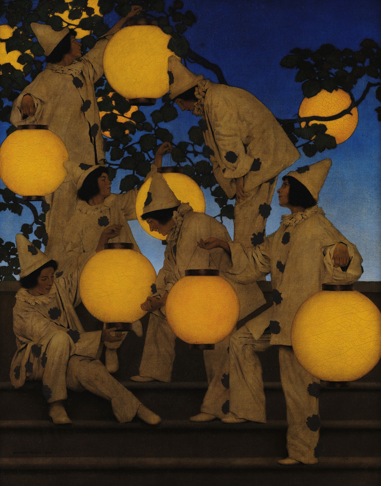

人物沿左下—右上接续；手臂、腿与灯绳组成一串三角形。水平石阶稳住重心，圆灯让急促动作出现停顿。
钴蓝与橙金互补：70% 蓝黑氛围负责后退，20% 灰紫人物承接，10% 金色光源向前跳出。
馆方记载，Parrish 以纯色颜料与清漆逐层叠加，形成明亮而深邃的颜色。清晰轮廓与大色块，又让作品缩小刊印后仍能抓住视线。
事实：Maxfield Parrish（1870–1966）是美国画家与插画家。本作完成于 1908 年，后为 1910 年 12 月 10 日的 Collier’s 杂志复制刊用。
上句为“每日艺术”的观看分析，并非作者原话。
Maxfield Parrish，《The Lantern Bearers》，1908，油彩、画布裱于板，画心约 101.6 × 81.3 cm；Crystal Bridges Museum of American Art，2006.71。图像：Standard Ebooks，7890 × 10054；其研究标记为美国公版，其他法域须复核。图片版权归原作者及相关权利人；赏析为“每日艺术”原创分析。